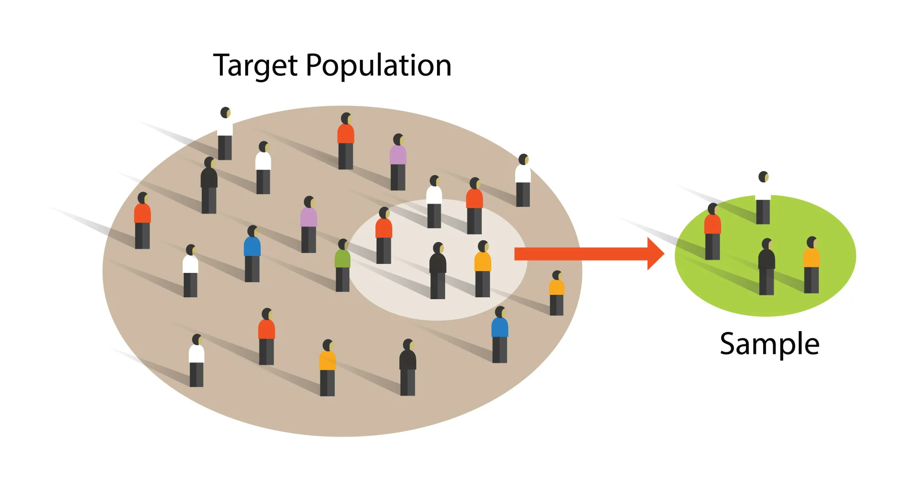
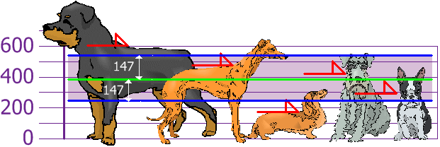
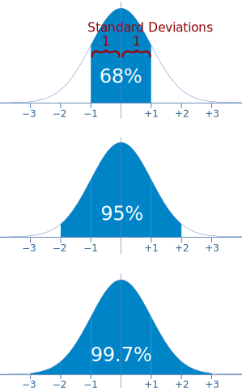
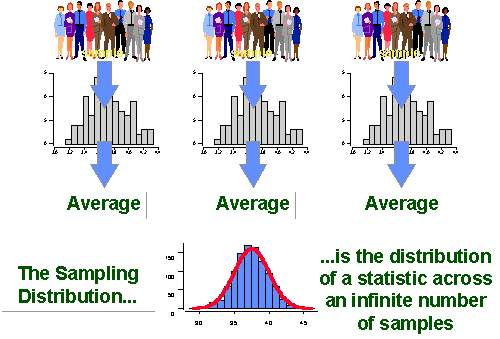
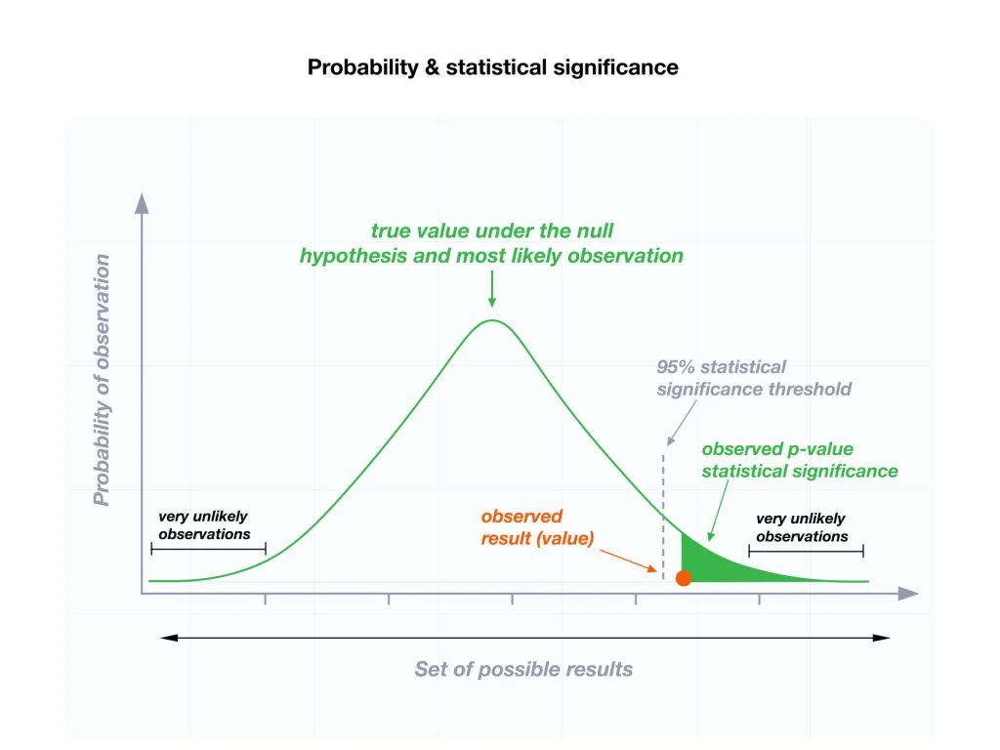
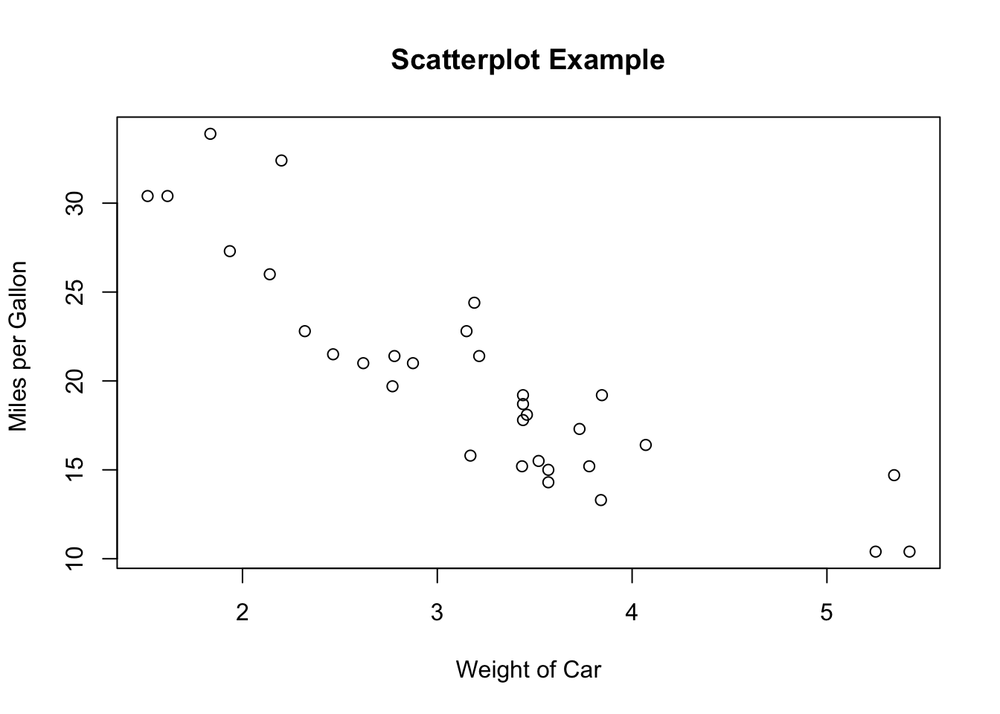

![]()
x <- "Hello World"
# anything I write after the "#" will not be executed
print(x) # this code will tell R to print the object x. [1] "Hello World"This page is my own personal recitation website. I will post both course material and anything we go over in recitation. This is simply a central hub that you can use to help you throughout the semester.
This does not replace the lecture, canvas, or your notes.
In previous years, I have used slide shows. This website is an effort to have a more organized and central workflow that is more accessible.
I teach the 017 and 018 recitation. Make sure you are in the right section!
Section 17 meets on Th 10:10am-11:01am Bruce Curtis Bldg E158
Section 18 meets on Th 1:25pm-2:15pm Clare Small Arts and Sciences 104
Pollock, Philip H. and Barry C. Edwards. 2020. The Essentials of Political Analysis. 6th Edition. CQ Press. (EPA)
Pollock, Philip H. and Barry C. Edwards. 2023. An R Companion to Political Analysis. 3rd Edition. CQ Press. (RCPA)
This class requires the use of a computer. Not an iPad! You are expected to bring it to lecture and recitation regularly.
If you do not have a computer, the library should have some available for you to rent.
Much of this class revolves around the statistical software known as “R”. R is free and open source. It is widely used in academia and industry. We will discuss how to install R soon.
The only way to reach me is by email. I try my best to be as responsive as possible. You may email me at any time of the day but please understand it may take up to 48 hours for me to respond.
Email: stone.neilon@colorado.edu
My office hours will occur every Tuesday from 11:00 AM - 1:00 PM. If you are unable to meet at that time, please email me to schedule a time that works for you.
My office is Ketchum 382. The office is called the American Politics Research Lab (APRL).
Per the syllabus, recitation is 15% of your overall grade. Attendance accounts for 10%. Participation in recitation accounts for 5%. Showing up to class and participating is important to succeed in this class.
Attendance and participation is part of your grade. Per the instructions of the professor, you are allowed to miss ONE class before it starts to count against your grade. You do NOT have to email me if you will be missing class. There is no excused or unexcused absence. You simply get one “freebe” to miss class. If you have a valid reason for missing multiple classes, please inform me as soon as possible so we can coordinate the appropriate response together. Subsequent absences after your “freebe” will result in a -10% penalty to your recitation grade. This will also impact your participation grade as you cannot participate if you are not in class.
Some of you might have chosen to pursue a social science degree simply because you thought it would have less math. Unfortunately for you, math is not going anywhere and you need it to be successful in your career. The purpose of statistics is to use data we have, to tell us about data we do not have. This course will provide you just enough to be dangerous.
If you have never coded before or have very little experience with computer concepts, do not fear. In many ways, you may find coding in R to be frustrating and foreign. This is normal. I want to stress that this material is not something you can memorize like history facts. Programmers typically talk about coding as languages. Languages require practice. R will take practice. You will have errors in your code and you will get confused. I will do my best to help you understand how to read and write code using R. Additionally, there is a plethora of information online. Websites such as Stack Exchange, YouTube, Reddit, and other forums probably have solutions to issues you might encounter. I use them all the time, even for trivial stuff.
Remember that both the Professor and I have office hours to help you, if needed. We are here to help you, so please do not be scared or intimidated to come talk to us, it’s our job. You may also schedule additional help with the department’s Methods Lab Coordinator (these are grad students that have previously TAed this course):
Samantha Register - samantha.register@colorado.edu
I want to make sure you do well in the class. I do my best to make recitation fun, accessible, and meaningful. We will be using computers regularly, I cannot and will not monitor your use during recitation. You are adults and I trust that you are following along. So please do not be texting your friends; shopping on Alo or Aritzia - those pilates socks will be there after class, I promise; playing video games; or listening to music with your very obvious, not discrete, airpod in your left ear. Also, please laugh at my jokes.
There will be group work in this class. Please consult the syllabus for more details. I will decide how groups are broken up. I will randomly assign new groups for each homework. The rationale behind random assignment is to better encourage community and engagement within the classroom. I still talk to people I met in my undergraduate classes to this day. I found the more I engaged with others, the better I did. Don’t be shy!
Group work can sometimes lead to uneven work load amounts. You are expected to contribute evenly in groups. In the event you find individual(s) not pulling their weight, I will consult with the individual(s) to determine if their grade should be evaluated separately from the group. Additionally, the individual(s) participation and homework grade may suffer. Please email me if any issues or concerns arise within groups. I will find a proper solution and consult Professor Beard if needed.
How do we know stuff?
Theory + evidence
Theory: comprehensive explanation for some phenomena.
Developing a theory requires an expectation about a relationship between things.
parachutes increase air resistance
more air resistance means slower fall
slower fall means less acceleration on landing
less acceleration means less chance of injury
We can test theory in multiple ways
With parachutes:
lots of experiments with air resistance
lots of observations about how falls cause injury.
Basically, statistics needs theory to reach substantive inference.
Smith, Gordon C.S. and Jill P. Pell. 2003. “Parachute use to prevent death and major trauma related to gravitational challenge: systematic review of randomized controlled trials.” BMJ. 327(7429):1459-61. https://www.ncbi.nlm.nih.gov/pmc/articles/PMC300808/
Yeh, Robert W. et al. 2018. “Parachute use to prevent death and major trauma when jumping from aircraft: randomized controlled trial.” BMJ. 363:(5094). https://www.bmj.com/content/363/bmj.k5094
EPA “Introduction”
RCPA “Getting Started With R”
Download R and R studio!

I saw them at Red Rocks last week. Vibe was incredible, you just had to be there. Is this a humble brag? Yes, I am shameless. No, I will not apologize.
R is a programming language for statistics. It was first created in 1993. R is an object oriented environment. Many of you have had exposure to Excel and it’s formulas. R is somewhat similar in that it gives us the same capabilities. However, R is much more powerful, flexible, and can evaluate more data than Excel. Unfortunately, what we get in power and flexibility, we trade off in user experience as there is a bit of a learning curve.
R Studio is an integrated development environment (IDE). It is an interface that basically makes R usable. R is the language, R studio what you use to write/run/organize R. There are other IDE’s you can use, Jupyter Notebook is one example, but for the purposes of this class you must use R Studio.
R is case sensitive.
Spaces matter
Indentions do not matter (like they do in Python). HOWEVER, you should always indent your code to keep it clean and readable. R will usually automatically indent for you. This concept becomes clearer as you code more.
R executes code from the top down.
YOU SHOULD ALWAYS COMMENT YOUR CODE!
“#” allows you to comment your code. You can type anything after the # and R studio will not execute that code (it basically skips over it). See example below
x <- "Hello World"
# anything I write after the "#" will not be executed
print(x) # this code will tell R to print the object x. [1] "Hello World"Folders and your file system within your computer is very important. Computers are extremely DUMB. You need to tell it EXACTLY what to do or else, it won’t work. Leaving your files in your default download folder will cause you extreme headache down the road. To prevent this, we are going to create a new folder on your desktop (or somewhere else that works better for you). You should label it “PSCI_2075”. When you download and save files for this class, you should save it within the PSCI_2075 file.
Think of folders as a Russian Doll. We need our file system to be organized because we have to tell our computer what we want R to look at. This will become clearer as we start coding within R.


The source pane is where you will write your code.
It is essentially the word doc for R.
It is also where the button to run code is located.
For mac: Command + Enter is the shortcut
For PC: Ctrl + Enter is the shortcut
You CAN write code straight into the console pane.
Results of analysis will show up here. (not graphs)
You generally use this to see what R will do when trying different things.
When you create an object (either in the source or console pane) that object will be appear there.
When you end your session, those objects will disappear (they take up a lot of RAM on your computer).
that is okay! Because you should have all the code you used to create those objects saved in your source pane.
If you want to clear the environment, the picture of the broom in the top middle will accomplish this.
You will also see a number with “MiB” next to it.
this is how much RAM R is using.
RAM stands for Random Access Memories (also a great Daft Punk album).
Think of RAM as like short term memory for your computer.
Don’t worry about it, but it is a nice indicator that can help you understand how hard R is working - if your R studio is slow that might indicate why.
This pane has quite a bit of utility.
When we start creating graphs, they will show up here (in the plot section).
Additionally, the file section is pretty useful. Think of it as a more accessible Finder (if you are on mac) - Folder system of your entire computer.
Also a help tab - this is useful for understanding functions/arguments.
Functions perform a defined sequence of actions. Functions are like verbs, we are telling R to take some object (noun) and do something with it.
There are literally a million functions. You do not need to memorize them.
x <- c(2,3,6,8,21,2,67,8) # create a numerical vector and call it "x"
sum(x) # sum() is the function. [1] 117range(x) # range() is another function. Look at the repsective outputs[1] 2 67Arguments are the parameters of the function
The functions above are rather simple but what happens when we have functions that we need to specify a bit more?
x <- seq(from = 2, to = 20, by = 2)
x [1] 2 4 6 8 10 12 14 16 18 20# create a sequence of numbers starting at value 2, going until 20 and count by 2. Then assign it as an object "x". The code above articulates what an argument is. I am telling the function how I want it to be executed.
y <- seq(10, 100, 5)
y [1] 10 15 20 25 30 35 40 45 50 55 60 65 70 75 80 85 90 95 100# note that you don't need to specify from, to, and by. The order is predetermined. Although it is good convention so you can better read what your code is doing. But Stone, how do we know what the arguments for the function are?! Good question! Every function has different arguments. The “help” section in the output/file pane will help you here. Go to that section and type in the search bar the name of your function. It will provide that arguments for you. You can also type “?seq” into the console and it will automatically take you to the help file for that function.
Object: R’s way of storing data in its memory, comparable to containers for physical things. Everything that exists in R is an object.
How do we create an object?
In R, we use “<-”
Knowing your object type/class is important. What if we have a bunch of numbers that are strings and we want to add them. We can’t do that because R is treating them as characters and not numbers! There are ways to change the object type. I will introduce that concept at a later point. For now, just familiarize yourself with the object types.
String
anything in between ” “.
x <- "1, 2, 3, 4"
y <- "yee-haw"
z <- "1 one, 2 two, 3 three, (>_<) - words + symbols...anything between the quotes is a string."
x[1] "1, 2, 3, 4"y[1] "yee-haw"z[1] "1 one, 2 two, 3 three, (>_<) - words + symbols...anything between the quotes is a string."Numeric
These are your integers (and floats - fancy way to say numbers with decimals)
num_example <- c(1,2,3,4,5,6.2,3.141592654)
num_example[1] 1.000000 2.000000 3.000000 4.000000 5.000000 6.200000 3.141593Factor
Used to categorize data
not super intuitive - their use will become clearer overtime.
Maybe this code will help understand
x <- c("Dog", "Dog", "Dog", "Cat", "Cat", "Cat", "Dog")
x # this will just print out a character vector. [1] "Dog" "Dog" "Dog" "Cat" "Cat" "Cat" "Dog"as.factor(x) #now we tell R to change this from a character vector to a factor vector[1] Dog Dog Dog Cat Cat Cat Dog
Levels: Cat DogSee how it gave you different “levels”. We have now created two categories.
Vector
Think of a vector as a column or row.
I’ve already created a few vectors in previous examples. Can you tell me how I did that?
Array
Matrix
R has “base” functions. Think of this in car terms, you buy a standard version and it comes with the basics. But now you want to go offroading and you need bigger tires. So, you go out and upgrade your stock car and buy bigger tires. Libraries are the same thing. Stock R might not have what we need, so we add a library that gives us new capabilities. There are libraries that you will almost always use. We will discuss what they are and what they do.
Tidyverse - this the one you will almost always use. It is a big library with a bunch of other smaller libraries within it.
Haven - this will help with importing data.
Foreign - another library used to import data.
Stargazer - Makes pretty tables.
RCPA3 - Textbook library.
There are so many more but these will be the ones you probably see the most.
You only have to install them once.
install.packages("tidyverse") # run this code and you will have installed tidyverse. You will never need to run this code again. Just because you have it installed does not mean R will automatically recognize it. You need to call it up or “invoke” its use. Generally, you just do this at the top of your script.
library(tidyverse)Congrats! You now have the functionality of tidyverse within your R session.
When you are done in R studio. You need to save your work and organize it appropriately.
Name the file 2024-09-05_R_Lab_1
Whether you are on PC or Mac, go to File > Save As > Desktop > PSCI_2075
Now close out of R completely (click no. Clicking yes is a bad habit that is clunky and uses a lot of memory for your computer)
Reopen R by clicking the file you just saved in the folder.
After you initially save, a simple save after you are done will suffice. (Command S is the shortcut for Mac, Ctrl S is the shortcut for PC)
You should create a heading for every script you create.
This is up to you but here is an example of a headings:
#~~~~~~~~~~~~~~~~~~~~~~~~~~~~~~~~~~~~~~~~~~~~~~~~#
#~~~~~~~~~~~~~~~~~~~PSCI_2075~~~~~~~~~~~~~~~~~~~~#
#~~~~~~~~~~~~~~~~Recitation Lab~~~~~~~~~~~~~~~~~~#
#~~~~~~~~~~~~~~~~~~~09/05/24~~~~~~~~~~~~~~~~~~~~~#
#~~~~~~~~~~~~~~~~~~~~~~~~~~~~~~~~~~~~~~~~~~~~~~~~#We first need to get data from somewhere. There are a bunch of ways to get data into R but we will focus on the simplest way.
Download this .csv file and put it into the PSCI_2075 folder.
Note: there is known bug with downloading datasets from Safari. It doesn’t happen often but if you notice anything weird about the data, it may be an issue caused by downloading from Safari.
Remember how I said file organization is very important, well buckle in.
Your computer cannot and does not think like you. It needs to be told EXACTLY what to do or else it panics.
When we are working with data (generally a .csv file) we need to import it into R studio.
We need to tell R studio what we want it to look at. The issue is R studio doesn’t know what to do unless you tell it exactly where the file is.
We will work through this during recitation.
R Studio defaults to some folder to look at initially.
To figure this out type the following into the source pane:
getwd()
we are telling R to tell us what working directory it is looking at.
each person will have their own unique working directory.
setwd(“…”)
THIS IS IMPORTANT AND IS UNIQUE TO YOU!
We are telling R where we want it to look.
We can use the File Pane to help us with this
Click “home” in the file section.
We want R studio to work out of that folder we created on our Desktop called “PSCI_2075”
Click “Desktop”
Look for the folder PSCI_2075 and click it.
Now click the cog wheel with “More” written next to it.
click “Copy folder path to clipboard”
You then paste that within the quotes:
setwd(“~/Desktop/PSCI_2075”)
Run the code
Now check if it worked by running getwd() again.
Now that we have our proper working directory, we can read our dataset into R.
mydata <- read.csv("anes_pilot_2016.csv") #read.csv is a command specifically for reading .csv files. After you run the code, what happened? Did anything change?

I have absolutely zero idea what she is saying but I like it. She is also playing at Red Rocks September 25th which is cool.
Please sit in your assigned groups! Check your email if you don’t know. Don’t be shy. Say hi and introduce yourself.
As you code more, you will start to notice different ways to get the “answer”. This is fine. I simply show you one way. There are any number of ways to write code in R to achieve the same result. There are ways that are better than others. You generally want code to be as simple as possible. Simplicity = more readable = more organized = less errors.
Rows are observations
Columns are variables
the type of thing you are measuring
example: the question asked in the poll.
N means the number of observations in the dataset.
Type of observation
If you are polling people, humans would be the unit of analysis.
Maybe our data isn’t people, perhaps our observations are countries.
Our unit of analysis would then be countries.
The unit we compare across.
Ecological fallacy
Any conclusions must also pertain to the unit of analysis
if we are measuring states, we can draw conclusions about STATES
WE CANNOT DRAW CONCLUSIONS ABOUT INDIVIDUALS IN STATES.
When you get a dataset, the author will provide a “codebook”. It is generally a pdf document. It will list the variables, number of observations, and general information about the data.
Sometimes numbers represent categories.
ex: ‘0’ = white, ‘1’ = black, ‘2’ = asian…etc etc
It will also tell you the min and max value of a variable.
Further, the codebook will tell you what the “NA” values are
NA values are non responses or simply we don’t have data for that value.
Last week we discussed the different types of objects in R. I introduced the following object types: factor, numeric, and character (aka string).
When you get into the data, it may be coded ‘weird’. Example, you may see numbers but you can’t do anything with them, why? Because they may be coded as character values! So we need to check using the class() function.
a <- c(1,2,3,4,5) # create a numeric vector
class(a) # tell me what type of object 'a' is[1] "numeric"b <- c("1","2","3","4","5") # create a character vector
class(b) # tell me what type of object 'b' is [1] "character"What if I want to change the object ‘b’ to numeric? We can do that using the as.numeric() function.
b <- as.numeric(b) # take the object 'b' and treat it as a numeric object then reassign it to b which 'write over it'.
class(b) # tell me what type of object 'b' is[1] "numeric"The point of this exercise is because sometimes you may be trying to do something with a variable and it may not be working. You need to know your data. How is R reading it? R obviously can’t add character values, so it may give you an error. Checking the object type will help you understand how to treat it and what to do.
You should now know what ‘<-’ does. If you do not, scroll up and review! However, there are a few other operators that we use that are important. There are more but here is the one of focus today:
‘$’ is an operator you will use. The dollar sign may also be called the “selector”. Its purpose is to grab specific pieces of information from a dataframe.
df <- data.frame( # create a data frame with the variables, age, income, taxes, sex.
age = c(25, 30, 35, 40),
income = c(50000, 60000, 75000, 90000),
taxes = c(5000, 10000, 15000, 20000),
sex = c("Male", "Female", "Male", "Female"))
df.income <- df$income #grab the income column/variable and create a new object. Notice what happens when we use the ‘$’. The selector is a powerful tool that you will use. We will often need to change our data. The ‘$’ allows us to access the sections of our data that we want.
The selector ($) can also be used to manipulate variables within our data frame. Let’s continue using the data frame above to show how this works.
# I want to add a new variable (race) to my dataframe.
df$race <- c("White", "Asian", "Black", "Hispanic")
df # Notice how we have a new column/variable age income taxes sex race
1 25 50000 5000 Male White
2 30 60000 10000 Female Asian
3 35 75000 15000 Male Black
4 40 90000 20000 Female HispanicLet’s keep going. Maybe I want to create a new variable that is the combination of two other variables.
# subtract the taxes from the income variable and create and new variable from the output.
df$grossincome<- df$income - df$taxes
df # check to see the new variable. age income taxes sex race grossincome
1 25 50000 5000 Male White 45000
2 30 60000 10000 Female Asian 50000
3 35 75000 15000 Male Black 60000
4 40 90000 20000 Female Hispanic 70000summary(df$grossincome) # we can also look at summary statistics of the new vew variable. Min. 1st Qu. Median Mean 3rd Qu. Max.
45000 48750 55000 56250 62500 70000 Data visualization is very important! We have thousands, possibly millions (shoot, even billions!), points of data. Data visualization helps us describe the data.
There are many ways to visualize data. Some include histograms, violin plots, bar plots, line plots, boxplots, and many more. Different visualizations can serve different purposes. Some plots are better at conveying information than others. One example we will look at is the histogram. The histogram is great at visualizing the distribution of one or more variables. What do we mean by distribution? How the data is distributed across different values.
Side note: you can also make pie charts but these suck. Don’t use them. Ever.
First, let’s use a better data set.
cardf <- mtcars # mtcars is a preloaded data set built into R.
cardf # check to see if data is loaded correctly mpg cyl disp hp drat wt qsec vs am gear carb
Mazda RX4 21.0 6 160.0 110 3.90 2.620 16.46 0 1 4 4
Mazda RX4 Wag 21.0 6 160.0 110 3.90 2.875 17.02 0 1 4 4
Datsun 710 22.8 4 108.0 93 3.85 2.320 18.61 1 1 4 1
Hornet 4 Drive 21.4 6 258.0 110 3.08 3.215 19.44 1 0 3 1
Hornet Sportabout 18.7 8 360.0 175 3.15 3.440 17.02 0 0 3 2
Valiant 18.1 6 225.0 105 2.76 3.460 20.22 1 0 3 1
Duster 360 14.3 8 360.0 245 3.21 3.570 15.84 0 0 3 4
Merc 240D 24.4 4 146.7 62 3.69 3.190 20.00 1 0 4 2
Merc 230 22.8 4 140.8 95 3.92 3.150 22.90 1 0 4 2
Merc 280 19.2 6 167.6 123 3.92 3.440 18.30 1 0 4 4
Merc 280C 17.8 6 167.6 123 3.92 3.440 18.90 1 0 4 4
Merc 450SE 16.4 8 275.8 180 3.07 4.070 17.40 0 0 3 3
Merc 450SL 17.3 8 275.8 180 3.07 3.730 17.60 0 0 3 3
Merc 450SLC 15.2 8 275.8 180 3.07 3.780 18.00 0 0 3 3
Cadillac Fleetwood 10.4 8 472.0 205 2.93 5.250 17.98 0 0 3 4
Lincoln Continental 10.4 8 460.0 215 3.00 5.424 17.82 0 0 3 4
Chrysler Imperial 14.7 8 440.0 230 3.23 5.345 17.42 0 0 3 4
Fiat 128 32.4 4 78.7 66 4.08 2.200 19.47 1 1 4 1
Honda Civic 30.4 4 75.7 52 4.93 1.615 18.52 1 1 4 2
Toyota Corolla 33.9 4 71.1 65 4.22 1.835 19.90 1 1 4 1
Toyota Corona 21.5 4 120.1 97 3.70 2.465 20.01 1 0 3 1
Dodge Challenger 15.5 8 318.0 150 2.76 3.520 16.87 0 0 3 2
AMC Javelin 15.2 8 304.0 150 3.15 3.435 17.30 0 0 3 2
Camaro Z28 13.3 8 350.0 245 3.73 3.840 15.41 0 0 3 4
Pontiac Firebird 19.2 8 400.0 175 3.08 3.845 17.05 0 0 3 2
Fiat X1-9 27.3 4 79.0 66 4.08 1.935 18.90 1 1 4 1
Porsche 914-2 26.0 4 120.3 91 4.43 2.140 16.70 0 1 5 2
Lotus Europa 30.4 4 95.1 113 3.77 1.513 16.90 1 1 5 2
Ford Pantera L 15.8 8 351.0 264 4.22 3.170 14.50 0 1 5 4
Ferrari Dino 19.7 6 145.0 175 3.62 2.770 15.50 0 1 5 6
Maserati Bora 15.0 8 301.0 335 3.54 3.570 14.60 0 1 5 8
Volvo 142E 21.4 4 121.0 109 4.11 2.780 18.60 1 1 4 2colnames(cardf) #lets look to see what the names of the variables are in our dataframe. [1] "mpg" "cyl" "disp" "hp" "drat" "wt" "qsec" "vs" "am" "gear"
[11] "carb"# we could choose any variable, but lets look at the distrubtion of mpg.
nrow(cardf) # tells me how many rows/observations in a dataset[1] 32hist(cardf$mpg) # create a histogram of the mpg variable. 
hist(cardf$qsec) # lets look at the distribution of qsec. 
WOW! So pretty! look at you go.
Notice the title and x/y axis names. They aren’t pretty. We want clean titles to help with readibility. I won’t show you how to change these right now BUT you have the tools to figure this out for yourself. hint: ?hist
Think about what you can learn from the histogram vs. looking just at the numbers. Imagine if were looking at millions of data points! Plotting our data helps you get an idea of where the majority of values are. This is really important.
Create a new script and install the ‘RCPA3’ package.
Import the ‘world’ dataset from the RCPA3 package. I provide code for how to do that below:
#install.packages("RCPA3") Note: this is commented out because I have already installed it.
library(RCPA3)
world # The RCPA3 package has preinstalled datasets. With the dataset, complete the following:
create a histogram for the percent of a country’s labor force that is in the military
add 2 variables together
subtract 1 variable from another
Before you begin, do some setup:
world2 <- world # create a new object to use for manipulation so that we do not alter the original dataWithout looking, could you tell me the following?
What does the ‘<-’ do?
What does the ‘$’ do?
Why do we need to visualize data?
Did you remember to add a heading to your R script?
Check your knowledge. Use the appropriate tools to figure out the answer to these questions. Consult the notes/readings/material if you do not know how to answer. “I don’t know” is not a sufficient answer.
What is the unit of analysis in the ‘mtcars’ dataset?
What is the unit of analysis in the ‘world’ dataset?
What is the mean of the variable ‘mpg’ in the ‘mtcars’ dataset?
What is our N for each dataset we looked at?
What do rows represent?
What do columns represent?
Homework 1 is now posted on Canvas! Make sure you follow the directions.
You should know who is in your group. Please contact them if you haven’t already. I provided everyone’s email, so check your email. I also assigned you to groups in Canvas.
You only have to turn in one copy - PLEASE WRITE THE NAME OF EVERYONE IN YOUR GROUP ON ALL DOCUMENTS TURNED IN!
Work together! Ask your group for help!
Use your notes, Youtube, peers, etc.
or scroll up and use all the notes I have given you!
All the resources I have given you should allow you to complete homework assignment with (relative) ease.
You will get errors! Double check your spelling, spacing, capitalization, etc.

😵💫
Please sit in your assigned groups! I will be giving you some time to work on your homework.
We have gone over quite a bit in these first few weeks. I want to spend this time to allow you to ask for clarification on anything we’ve gone over thus far. Any questions for me?
Why do we collect data?
What is a concept?
What is a variable?
What is operationalization?
What are you interested in? What is this thing you want to know about?
Are you interested in knowing about ideology? Democracy?
Cool! Now, how are going to measure these?
How will you collect data on this thing?
REMEMBER: Theory will guide your procedure in coding and data collection.
you need to define these concepts and defend your choices using theory.
Imagine someone asks, “why did you code Russia as a democracy?”
to defend yourself, you would explain how you define democracy and how Russia fits into your definition of democracy.
When we get data, we want to summarize key elements of individual variables.
Want to understand how the variable is distributed
How do we show the distribution? Histograms.
What is a typical value?
mean
median
mode (sortof)
How widely is the data dispersed around the typical value
range
standard deviation and variance
You only have to submit 1 assignment per group.
Every document turned in MUST have all members of the group listed.
Your script file should be organized.
IT MUST HAVE A HEADING INCLUDING THE FOLLOWING:
Names
Date
Title
I expect at least some comments adjacent to your code explaining what the code does.
Make sure you have both installed the packages needed and turned them on.
Divide the amount of work evenly. The homework is nicely divided to allow each individual to take one section.
I mean this whole thing is incredible. What I would do to be in the south of France dancing to this right now…You think I want to be here teaching you about variance?! JK I do <3 variance and standard deviation are very important.
P.S. - They are coming to Denver on January 27.
What is population?
What is a sample?
Why do we take samples? Why not just look at every person across the United States?
We are using data we have (sample) to tell us about data we don’t have (population!
Using a subset of the population can help us understand the population.
Samples can have biases!
There are different ways to sample.
how we sample is dependent on some factors but for the purposes of this class, we need need to ensure our sample is randomly collected.
not randomly sampling can bias our results.
There are different formulas for population variance/SD and sample variance/SD
What if I am looking at all 50 states (USA)? Would I use the population formula for variance and SD?
you will almost always use the sample formula.

We want to know what a typical value is.
We talked before that the following help us figure this out:
mean
median
mode
We discussed in the lecture the pros and cons of these measures.
They are important though because they help us describe the data.
In general, we want our data to be normally distributed.

\[ \text{Variance} (s^2) = \frac{\sum_{i=1}^{n} (x_i - \bar{x})^2}{n-1} \]
Chill, chilllllll. Let’s go over what this all means.
Variance is a measure of SPREAD.
The average of the squared differences from the Mean.
Let’s walk through the formula step by step:
The \(\Sigma\) means to sum all the values together.
\((x_i - \bar{x})\)
in this part we are taking each observation and subtracting it by the mean (average).
Now lets add the square term. \((x_i - \bar{x})^2\)
Why do we square this?
Imagine a number line from 0 to 100. We have some dataset where the mean is 50. Now let’s say one of our observations is 38. 38-50 = -12. See what happens!? We have a negative number. All observations to the left of our mean are negative while all observations to the right of our mean are positive.
Thus we square to accommodate for these canceling out.
Now the \(n-1\)
N represents the number of observations.
Why are we subtracting it by 1?
If we were calculating the population variance, then we wouldn’t subtract by 1. However, we are pretty much never working with the population. We are always using some samples.
This part is not super intuitive. BUT, we are using the sample mean, NOT the population mean to calculate the variance.
We don’t know what the “true” population mean is. We have an estimate of it using our sample. Thus, there is some uncertainty around the sample mean (we don’t know if the sample mean is = to the population mean). To account for this uncertainty we add a -1 to our denominator.
By subtracting 1 from the denominator this makes the spread a little larger to account for that uncertainty. Think about what happens when we make our denominator smaller compared to if we don’t. Example:
\(\frac{16}{4-1}\) vs. \(\frac{16}{4}\)
\[ \text{Sample Standard Deviation} (s) = \sqrt{\frac{\sum_{i=1}^{n} (x_i - \bar{x})^2}{n-1}} \]
Standard deviation is literally the square root of variance.
Everything still means the same, we just square root it at the end.
WHY DO WE SQUARE ROOT?

Why do we care about standard deviation?
see photo below:
This will be very important when we get to statistical inference!

Let’s work through an example together in R together.
StatQuest on Variance and SD. I would not be teaching you this if it weren’t for him.
Please get in contact with your new group.
It is due October 4th.
You MUST turn in the following:
a PDF of your responses
Please include the original question and your response.
Your R script.
This is where it gets a bit confusing.
Take your time. Watch some videos to reinforce this. This is not intuitive.
ASK QUESTIONS!
🦅 “Always searching, never perching” - incredible line. This is going to be my next instagram caption. 🦅
We can calculate how likely we are to get a sample result
When we sample, we introduce random error.
In essence, calculate how likely it is our sample is misleading.
Depends on:
law of large numbers
Central limit theorem
As the sample’s size approaches \(\infty\), sample mean will converge on the population mean
Sample must be random.
basically, bigger sample = better.
Very important!
The distribution of a large number of sample means will be normally distributed around the population mean
Normal distribution: bell curve
Sampling distribution: distribution of possible samples
The sampling distribution gets tighter as the sample size increases.
This theorem is the critical math concept that allows us to do hypothesis testing.
Go back to the visual representation link from the central limit theorem section.
Imagine we took a bunch of samples.
Take the mean of each of those samples
now plot them like a histogram.
these are plotted as density plots.

\[ SE = \frac{SD}{\sqrt{n}} \]
the standard deviation of the sampling distribution
What is the difference between standard deviation and standard error?
Standard deviation quantifies the variation within a set of measurements. (singular)
Standard error quantifies the variation in the means from multiple sets of measurements. (multiple)
We (usually) only get one sample.
we want to know how likely our sample is given the sampling distribution.
we are trying to figure out where our sample is relative to other samples, assuming some null hypothesis.
Basic idea: assuming some population mean, how probable is our sample?
Want to show that the data is unlikely given that assumption.
The p-value is extremely important and commonly misunderstood.
A p-value is the probability of observing a test statistic value equal to or more extreme than the value you computed if the null were true.
If we assume the null hypothesis is true, then we could draw the sampling distribution centered around zero (or whatever our value specified is). By specifing the null hypothesis we can invoke the central limit theorem.
The p-value is decided by the researcher. Convention typically sets the p-value at .10 and below. However, .10 is still not ideal, the lower the better.
Remember: we are using data we HAVE, to tell us about data we do NOT HAVE.
\(H_o\) : (null hypothesis) - I think the mean is not greater than x
\(H_A\) : (alternative hypothesis) - I think the mean is greater than x
For whatever variable you are interested in, report summary statistics on that variable. We want to know how our sample is distributed.
There are few different test statistics we can calculate. We will use a “Student’s” t-test. Fun fact, this statistical test was developed by the Guinness Beer Company. See statistics is important!
one sample t-Test formula:
\[ \frac{\bar{x} - \mu}{\frac{s}{\sqrt{n}}} \]
\(\bar{x}\) = observed mean of the sample
\(\mu\) = assumed mean
\(s\) = standard deviation
\(n\) = sample size
This is what R is doing under the hood when we run the t.test command. The t-score we compute from a t-test tells you how far the sample mean is from the hypothesized population mean in terms of the standard error.
We do NOT prove our hypothesis.
We can only do two things in the world of null hypothesis testing:
I reject the null hypothesis
I fail to reject the null hypothesis
I will show example code below. When we do this in R, we will get back a bunch of values.
We will get a “t value”.
“df” or degrees of freedom
p-value
As a researcher, I am interested in how people feel about Obama. I think to myself, hmm, I think the public likes Obama. But then I also remember, that a lot of people don’t like Obama. But, I think more people like Obama than not. I imagine that I ask everyone in the United States how I feel about Obama on a 0-100 scale. I can’t do this because I don’t know everyone and I don’t have enough money 😔. To figure this out, I take a sample, make a hypothesis, and test it!
\(H_o\) : The public’s average feeling towards Obama is \(\leq\) to 50
\(H_a\) : The public’s average feeling towards Obama is \(>\) than 50
Lucky for us, someone already took a sample. Wow, thank you RCPA3! Let’s call up that sample.
library(RCPA3)
nes <- nes #load nes dataset into environment With our data loaded into R, let’s look at our sample feeling thermometer of Obama:
# calculate the mean of the 'ft.obama' variable in the nes dataset.
mean(nes$ft.obama, na.rm = TRUE) # the 'na.rm' is telling R to remove the NA values. [1] 60.87802We now have a sample mean (\(\bar{x}\)) of 60.87802. Of our respondents, the average feeling towards Obama was 60.87802.
Now you might be thinking, 60.87802 > 50. Thus our alternative hypothesis is right. Case closed. Whoooooa, slow down buckaroo.
This is a SAMPLE. Maybe this sample is not that much different from the true population feeling thermometer toward Obama of 50. We need to know how likely it is we observed this sample given the population mean (the null hypothesis) was actually 50. But again, we don’t ever know the true population parameter. We assume the null hypothesis to be true. We are trying to see how likely it is for us to observe the value we got from our sample IF WE ASSUME THE POPULATION MEAN TO EQUAL 50.
We can use a test statistic to figure this out. Forgot what a t-test is? Scroll up.
t.test(nes$ft.obama, mu=50, alternative="greater") # do t-test of ft.obama, with hypothesis that the mean age is >50
One Sample t-test
data: nes$ft.obama
t = 26.727, df = 8164, p-value < 2.2e-16
alternative hypothesis: true mean is greater than 50
95 percent confidence interval:
60.20847 Inf
sample estimates:
mean of x
60.87802 Let’s go through what this means:
t = 26.727
this is our t-test score. Basically our sample that we observed is 26.727 standard errors away from our hypothesized mean of 50.
Remember this photo from earlier:
While this relates to standard deviations and is conceptually a bit different, it still should help.
Those numbers on the x-axis are standard errors. We can see the majority (99.7%) of all values lie within 3 standard errors of the mean.
df = 8164
degrees of freedom
after getting rid of the NA values we have 8165 observations
p-value < 2.2e-16
p-value definition: A p-value is the probability of observing a test statistic value equal to or more extreme than the value you computed if the null were true.
our p-value is in scientific notation
so it’s actually: \(0.00000000000000022\)
we know that we want p-values smaller than .10 (.05 and lower is better but I digress)
is this smaller than .10?
Interpretation:
we reject the null hypothesis
the public feeling thermometer towards Obama is \(\neq\) 50
Our sample mean is statistically greater than 50.
Remember! We never accept or “prove” our hypothesis.

Perhaps we have a binary or categorical variable. We want to see if the proportion we observed is statistically different from some value we specify. Everything is still the same but we will select a different variable and use different R code.
Let’s look at the variable ‘changed.names’. It asks whether people have changed names. I want to know how many people have changed names.
I am going to specify that more than 30% of people have changed names. Thus my hypothesis will look like the following:
\(H_0\) : \(p\leq .30\) the proportion is less than or equal to .30
\(H_A\): \(p>.30\) the proportion is greater than .30
summary(nes$changed.names) # find number in each category of whether people have changed names 1. Have changed name 2. Never changed name NA's
2672 5501 107 prop.test(2672, 2672+5501, p=.3, alternative="greater") # use number from summary command to conduct proportions test. Hypothesis is more than 30% of people have changed names
1-sample proportions test with continuity correction
data: 2672 out of 2672 + 5501, null probability 0.3
X-squared = 28.097, df = 1, p-value = 5.768e-08
alternative hypothesis: true p is greater than 0.3
95 percent confidence interval:
0.3183931 1.0000000
sample estimates:
p
0.3269301 The prop.test argument is structured as such:
I am a strong believer that there is no “correct” way to teach this material. It helps to be exposed to different explanations. Here are some YouTube videos that helped me:
3Blue1Brown - Central Limit Theorem
zedstatistics - Standard Error
If you are thinking “Naur more statistics” then zedstatistics is your guy.
Statistics but with an Australian flair.
StatQuest with Josh Starmer - Central Limit Theorem

Do I need to say anymore?
Have not looked at it yet.
Hopefully went well?
Midterm is next week! Logistics are listed below:
There will be multiple choice.
There may be short answer response questions.
There will be an R portion.
You will have 2 hours to complete the test once you open it.
The test will be open for 24 hours.
ABSOLUTELY NO WORKING TOGETHER.
Midterm on October 16
For this week’s recitation, I am going to allow you to get into groups and collaborate on a study guide.
Some benchmark questions that may or may not be important for the midterm (but you should still know regardless!):
How do we find the mean?
How do we find the median?
How do we find the mode?
What do histograms tell us?
What is data?
What is the point of statistics?
What is the unit of analysis?
What is a concept?
True or False - observations are the columns in our data set.
What is a population?
What is a sample?
Why do we take samples?
Can you explain the central limit theory to me?
Why is the central limit theory important?
What is variance and how do we find it? What does it tell us?
What is standard deviation and how do we find it? What does it tell us?
What is standard error and how do we find it? What does it tell us?
I run a t-test and the R output shows a p-value of .12. What do I do?
Relatively speaking, do we usually want more observations or less in our data set?
I want to load the states data set into the R environment. I keep running this code but it keeps giving me an error!!!! UGH! What do I do?
states <- states hist(vep20.turnout)What is the definition of a p-value?
What is a null hypothesis? What is an alternative hypothesis?
Can we accept our hypothesis?
What is a confidence interval?
R gave me a bunch of code after I did a ‘t.test’. Can you help me understand what it means?
library(RCPA3)
# null hypothesis is feeling toward congress is equal to or greater than 50.
# alt hypothesis is feelign toward congress is less than 50
t.test(nes$ft.congress, mu = 50, alternative = "less")
One Sample t-test
data: nes$ft.congress
t = -22.32, df = 7354, p-value < 2.2e-16
alternative hypothesis: true mean is less than 50
95 percent confidence interval:
-Inf 44.76362
sample estimates:
mean of x
44.34697 Can you name a measure of central tendency? What do these values tell us?
I’m on a plane 10,000 feet in the air. Before jumping, I read a study about how there has been no randomized controlled trial of parachutes. Equipped with this knowledge, I dive head first out the door. Given what you now know about statistics, do we need theory? If so, why?
Do you know how to annotate your code?
What does ‘<-’ do?
What does ‘$’ do?
What is a function/command in R?
I have provided you with all the material possible for you to succeed on this midterm. I recommend you review the readings, lecture slides, your notes, and the material on this page. I want to remind you that this page is not intended to cover all the material. It is simply an additional resource to help guide you. If you are still fuzzy on material, come to my office hours next Tuesday. Alternatively, Professor Beard has office hours available. Additionally, I recommend YouTube videos on concepts you may still be struggling with.
Remember: You CAN do it.
I’ll see you on the other side of the midterm. 🫡
Midterm? What midterm? 💃🕺🪩
How was the midterm? Hard? Easy?
Anything you didn’t get?
Have you ever been interested in knowing if something causes another thing?
If you said YES then buckle in!
Data can help us answer these types of question.
We call our dependent variables ‘Y’
the variable we are interested in observing change in.
We (usually) put the dependent variable on the Y axis.
We call our independent variables ‘X’
It is a variable that we change aka the ‘treatment’.
We (usually) put the independent variable on the X axis
You’ve seen histograms
You’ve seen density plots
Now it’s time for scatter plots. (You all have seen this before at some point in your life.)
x <- mtcars$wt
y <- mtcars$mpg
# scatter plot code
plot(x, y, main = "Scatterplot Example",
xlab = "Weight of Car", ylab = "Miles per Gallon ")
There is an example of a scatter plot.
Can we learn anything from this?
Regression is the big statistics dawg in town
Regression is a statistical tool we can use to see how much X causes change in Y.

Basically drawing a line in the middle of all the points.
@online{neilon2024,
author = {Neilon, Stone},
title = {PSCI 2075 - {Quantitive} {Research} {Methods} - {Fall} 2024},
date = {2024-08-26},
url = {https://stoneneilon.github.io/teaching/PSCI-2075_Fall_24/},
langid = {en}
}